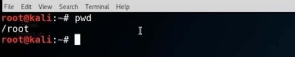

print working directory:
pwd

change direcory
cd <directory>
cd ..
list everything that is in the folder:
ls
show hidden folders
ls -la

Create and delete folders
mkdir newFolder
rmdir newFolder

Copy file to another directory & remove file file from a directory
cp test.txt Downloas/
rm Downloas/test.txt

move a file from one directory to another
mv test.txt Downloas/

if you want to find a specific file named bash in a folder
updatedb
locate bash